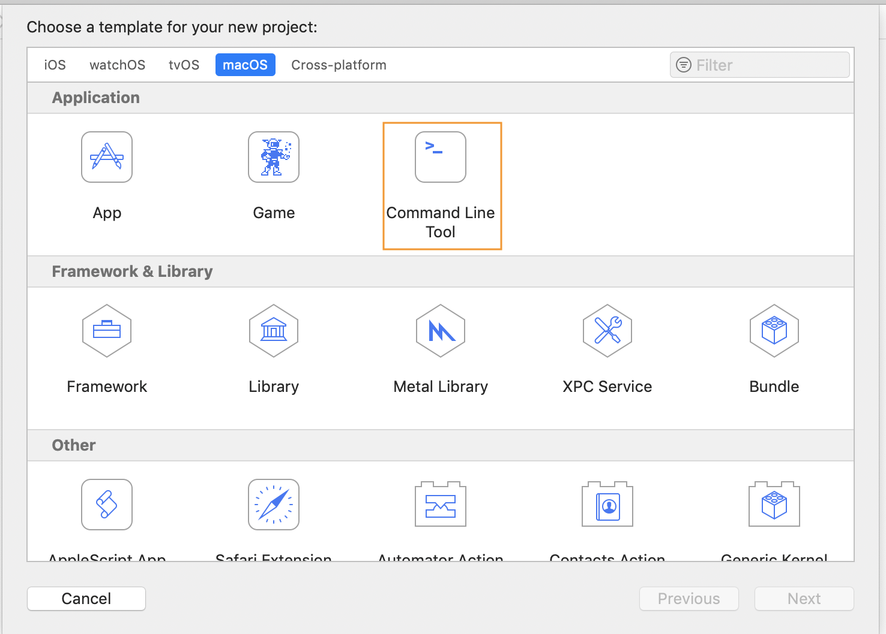
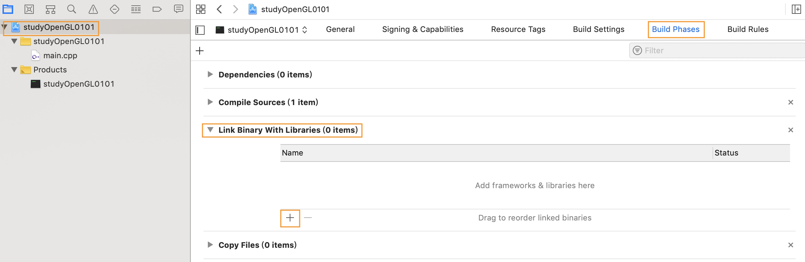
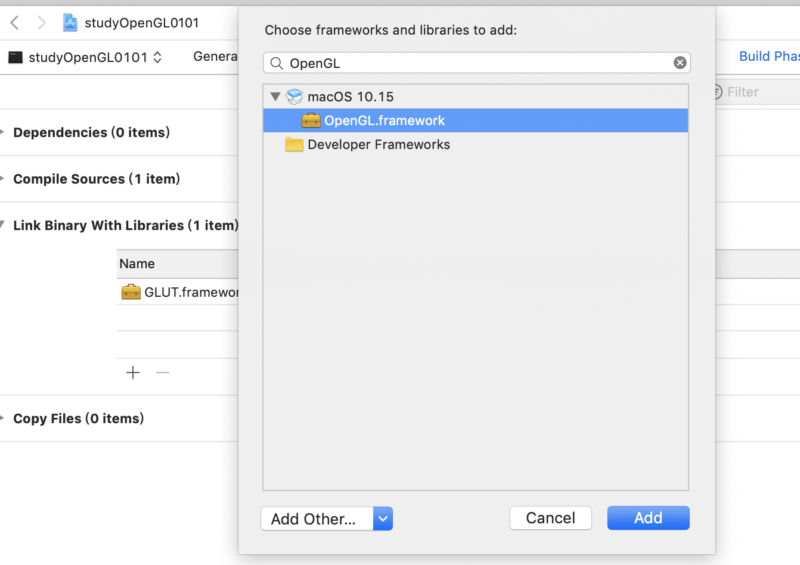
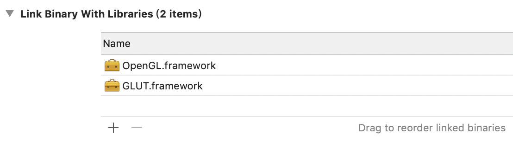
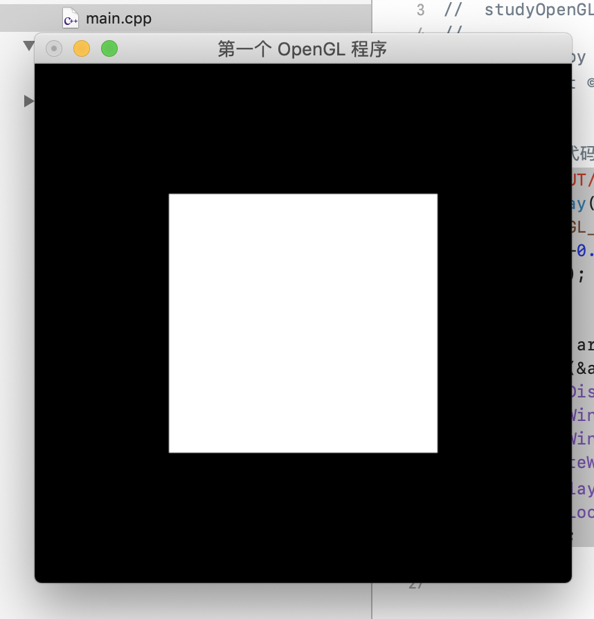
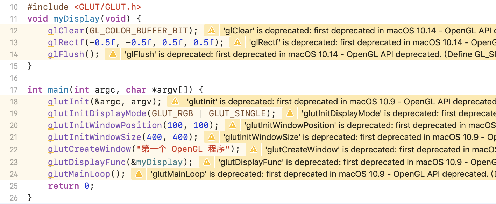

OpenGL学习笔记（一）简介&初探
1. OpenGL
OpenGL 简介
- OpenGL（Open Graphics Library，开放式图形库）是用于渲染2D、3D矢量图形的跨语言、跨平台的应用程序接口（API），包含了一系列可以操作图形、图像的函数。[1][2]
- OpenGL官网的描述其为”The Industry’s Foundation for High Performance“[3]，OpenGL本身并不是一个API，仅仅是一个由Khronos组织制定并维护的规范（Specification）。OpenGL规范严格规定了每个函数如何运行，以及其输出输出值，而函数的具体实现，则由OpenGL库的开发者自行决定。[2]
- 实际上，通常是显卡的生产商开发具体的OpenGL库，如使用Apple系统时，OpenGL库是由Apple自身维护。当OpenGL产生bug时，可以通过升级显卡驱动解决。[2]
OpenGL 相关库
- OpenGL core Library
- OpenGL核心库
- OpenGL Utility Library（GLU）
- OpenGL Utility Toolkit（GLUT）
- 提供窗口系统的功能命令
- freeglut
- 更新OpenGL的库
- OpenGL Extension Wrangler Library（GLEW）
发展历史
- 1980s，软件开发人员为每种图形硬件编写自定义的借口和驱动程序。
- 1990初，SGI成为工作站3D图形领域的领导者，其IRIS GL API成为事实上的行业标准。其竞争对手（Sun、惠普、IBM）通过扩展PHIGS标准也将3D硬件投入市场，SCI 将 IRIS GL API转变为一项开放标准，即OpenGL。
- 1992年，SCI领导OpenGL架构审查委员会（OpenGL ARB）的创建。
- 1995年，微软发布Direct3D成为OpenGL的主要竞争对手。
- 1997年12月17日，微软和SGI发起华氏温标项目，统一OpenGL和Direct3D接口。1998年，惠普加入，但项目于1999年停止。
- 2006年7月，OpenGL架构评审委员会将OpenGL API标准的控制权交给Khronos Group。
相关概念
- 此部分主要参考[2]
核心模式 与 立即渲染模式
- 立即渲染模式（Immediate mode, 固定渲染管线）：早期OpenGL使用，绘制图形容易使用和理解，但是效率较低。
- 核心模式（Core-profile）：从OpenGL3.2后开始使用，移除了旧的特性，迫使用户使用现代的函数。
扩展
- 扩展（Extension）：支持扩展，未成为规范之前，显卡公司提出的新特性或优化可以通过扩展的方式在驱动中实现。
状态机
- OpenGL自身是一个巨大的状态机（State Machine）：一系列的变量描述此时的OpenGL如何运行。OpenGL的状态通常被称为OpenGL上下文。
- 使用OpenGL时，使用状态设置函数（State-changing Function）与 状态使用函数（State-using Function）来进行操作。
2. 初次尝试
- 以下内容针对Mac上的Xcode（版本 Xcode11），其他平台的搭建还请参考网上的其他资源（MAC XCODE已自带GLUT.framework和OpenGL.framework，所以初次尝试不涉及“复杂”的环境配置）。以下内容参考[4]
打开Xcode，新建一个Command Line Tool项目。

添加GLUT.framework和OpenGL.framework
点击Build Phases, Link Binary with Libraries

寻找、添加GLUT.framework和OpenGL.framework

完成后效果

进入main.cpp编写Demo代码并运行
Demo代码
//绘制一个正方形 #include <GLUT/GLUT.h> void myDisplay(void) { glClear(GL_COLOR_BUFFER_BIT); glRectf(-0.5f, -0.5f, 0.5f, 0.5f); glFlush(); } int main(int argc, char *argv[]) { glutInit(&argc, argv); glutInitDisplayMode(GLUT_RGB | GLUT_SINGLE); glutInitWindowPosition(100, 100); glutInitWindowSize(400, 400); glutCreateWindow("第一个 OpenGL 程序"); glutDisplayFunc(&myDisplay); glutMainLoop(); return 0; }运行效果
由于在macOS 10.9、10.14 后一些命令被废止，会出现以下提示信息，下一篇会使用GLEW库。

参考文献
[1]: https://baike.baidu.com/item/OpenGL/238984?fr=aladdin “OpenGL-百度百科”
[2]: https://learnopengl-cn.github.io/01%20Getting%20started/01%20OpenGL/ “LearnOpenGL CN-入门”
[3]: https://www.opengl.org “OpenGL 官网”
[4]: https://www.cnblogs.com/chenyangsocool/p/5357691.html “Max Xcode 下配置OpenGL - chenyangsocool - 博客园”